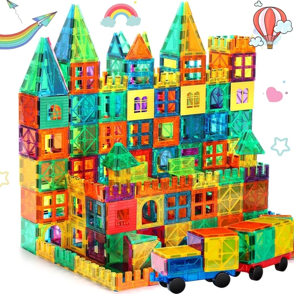
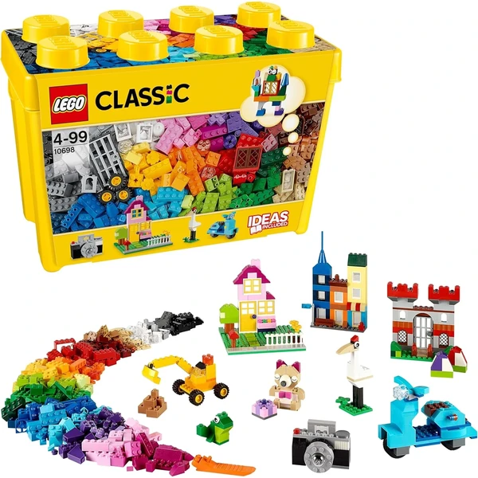
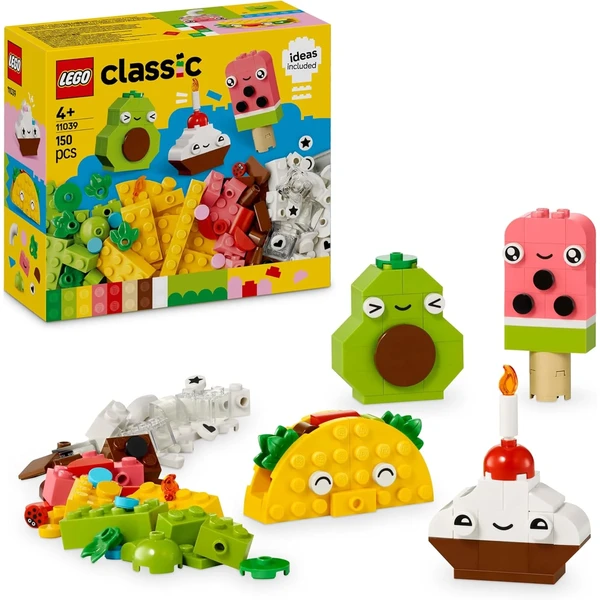
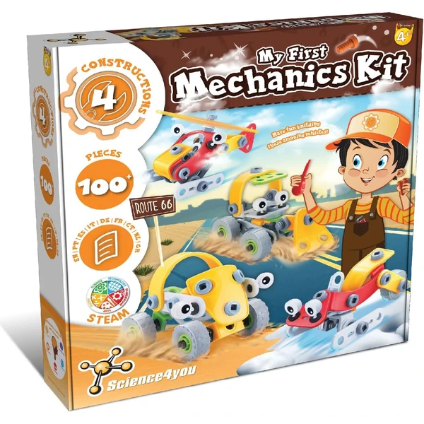

LEGO Classic Caja de Ladrillos Creativos Mediana
Una caja con ladrillos LEGO de 35 colores distintos y piezas especiales como ruedas, ventana y ojos, con una base verde incluida para empezar a construir coches, casas o animales.
⭐ ¿Por qué nos gusta?
- ✔ 35 colores distintos de ladrillos.
- ✔ Incluye base verde y caja de almacenaje.
- ✔ Combinable con el resto de sets LEGO Classic.
💬 Lo que más destacan las familias
Lo que más suele gustar es que las piezas se combinan fácilmente con las que ya tienen en casa, y que la base verde ayuda a que las construcciones se sostengan mejor. Los peques disfrutan mezclando colores y formas para inventar sus propias creaciones.
Ver en Amazon

Desire Deluxe Bloques Magnéticos translúcidos
Un set de 57 piezas magnéticas translúcidas para construir torres, castillos y figuras en 3D, con imanes potentes que sujetan firmemente las estructuras. El diseño translúcido permite jugar también sobre una mesa de luz.
⭐ ¿Por qué nos gusta?
- ✔ 57 piezas translúcidas, aptas para mesa de luz.
- ✔ Imanes potentes, estructuras más estables.
- ✔ Bordes seguros y materiales duraderos.
💬 Lo que más destacan las familias
Muchos padres coinciden en que los imanes son lo bastante fuertes como para que las torres no se vengan abajo a la primera, algo que engancha mucho a los niños. También gusta que puedan jugar con luz por detrás para ver las piezas de otra manera.
Ver en Amazon

FNJO Baldosas Magnéticas 100 piezas con coches
Un set de 100 piezas magnéticas translúcidas, con dos bases de coche incluidas, pensado para pasar de diseños planos a construcciones en 3D cada vez más complejas.
⭐ ¿Por qué nos gusta?
- ✔ 100 piezas, incluye 2 bases de coche.
- ✔ Compatible con otras marcas de piezas magnéticas.
- ✔ Incluye libro de ideas para construir.
💬 Lo que más destacan las familias
Una de las cosas más comentadas es que da para construcciones grandes sin quedarse a medias, y que los coches incluidos añaden un punto extra de diversión. Se agradece también que combine bien con otras piezas magnéticas que ya tuvieran en casa.
Ver en Amazon

LEGO Classic Caja de Ladrillos Creativos Grande
La versión grande de la caja de ladrillos LEGO Classic, con dos bases verdes, ventanas, puertas y ruedas incluidas, pensada para construir casas, animales y coches con más piezas y más posibilidades.
⭐ ¿Por qué nos gusta?
- ✔ Incluye 2 bases verdes y piezas especiales.
- ✔ Más cantidad de piezas que la versión mediana.
- ✔ Combinable con el resto de sets LEGO Classic.
💬 Lo que más destacan las familias
Los compradores valoran especialmente que sea una buena forma de ampliar lo que ya tenían, sin repetir piezas y ganando variedad. Los niños suelen pasar más tiempo construyendo cuanto más material tienen a mano.
Ver en Amazon

LEGO Classic Amigos Nutritivos Creativos
Un set temático de LEGO Classic para construir un cupcake, un helado, un aguacate y un taco, con piezas especiales como ojos y bocas para darles vida y transformarlos después en otros personajes.
⭐ ¿Por qué nos gusta?
- ✔ Cuatro modelos de comida distintos para construir.
- ✔ Piezas especiales: ojos, bocas y decorativos.
- ✔ Guía paso a paso incluida.
💬 Lo que más destacan las familias
Entre los comentarios más habituales aparece lo mucho que llama la atención a los niños construir comida con caritas, y lo bien que funciona para inventar historias después. Se nota que el punto divertido del tema ayuda a que se enganchen al montaje.
Ver en Amazon

Science4you Primer Kit Mecánico
Un set de más de 100 piezas maleables para montar cuatro vehículos distintos (tractor, helicóptero y más), con un manual de instrucciones ilustrado con fotografías para facilitar el montaje.
⭐ ¿Por qué nos gusta?
- ✔ Cuatro vehículos distintos para construir.
- ✔ Manual ilustrado con fotografías paso a paso.
- ✔ Piezas grandes, fáciles de manejar.
💬 Lo que más destacan las familias
Quienes lo han probado destacan que el manual con fotos hace que los peques puedan seguir el montaje casi solos, lo que les da mucha satisfacción. También gusta que las piezas grandes sean fáciles de encajar sin depender constantemente de un adulto.
Ver en Amazon